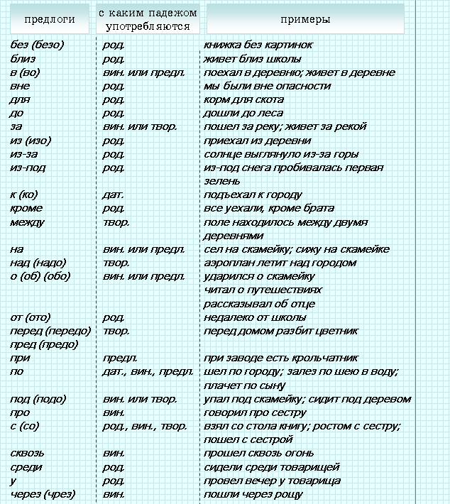
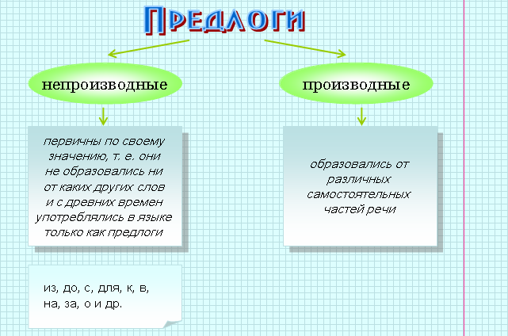

|
Самостоятельным частям речи, т. е. словам, которые могут отвечать на вопросы и выступать в качестве членов предложения, противостоят служебные части речи – предлоги, союзы и частицы. |
 |
Служебные части речи не называют предметов, действия и т. п., не отвечают на вопросы и не являются членами предложения. |
 |
выражать синтаксические отношения между самостоятельными словами |  |
стрелять в цель, гулять в лесу |
|
выражать синтаксические отношения между сочетаниями слов, предложениями | |
солнце скрылось, и быстро стемнело; было уже поздно, когда мы подошли к дому; |
|
присоединять к реальному значению самостоятельных слов различные дополнительные смысловые оттенки | |
вы-то это знаете, лишь вы это знаете |
|
Поэтому служебные части речи употребляются всегда в сочетании с самостоятельными словами. Служебными они называются потому, что обслуживают самостоятельные слова. |
|
Предлог – это служебная часть речи, которая выражает зависимость существительных, числительных и местоимений от других слов в словосочетаниях и предложениях. |
|
Мы зашли в комнату (предлог в входит в состав обстоятельства в комнату). |
|
положить на стол, положить в стол, положить под стол (в этих словосочетаниях предлоги указывают на пространственное значение, направление действия, выраженного глаголом). |
| Название разряда | Значение | Примеры предлогов | Примеры употребления |
| Пространственные | указывают на место | в, на, из-за, под, около, вокруг, у, к, над и другие |
ходить вокруг дома, прийти в школу, найти под стулом |
| Временные | указывают на время | через, к, до, с, перед, в течение и другие |
работать с 8 часов, закончить к вечеру |
| Причинные | указывают на причину | по, от, вследствие, из-за, за, ввиду и другие | на пришел по уважительной причине, промок из-за дождя |
| Целевые | указывают на цель | для, ради, на | работать на будущее, остановились для ночлега |
| Образа действия | указывают на образ действия | с, без, в, по и другие | работать с огоньком, говорил без увлечения |
| Дополнительные | указывают на предмет, на который направлено действие | о, об, с, про, по, насчет и другие | рассказать о происшествии, встретиться с другом |
Предлоги обычно многозначны, т. к. значение их не самостоятельно, а зависит от окончания зависимого слова.
|
идти в лес (предлог в имеет пространственное значение), прийти в 2 часа (предлог в имеет временное значение) |
|
Каждый предлог употребляется в соединении с определенными падежами существительных. При этом большая часть предлогов может соединяться только с каким-нибудь одним падежом. Некоторые же предлоги употребляются в соединении с двумя или даже с тремя падежами. |


| Название типа | От какой части речи образованы | Примеры |
| отыменные | образованы от косвенных падежей существительных с предлогами и без них | по причине, путем, в течение, по поводу, в продолжение. |
| отглагольные | образованы от деепричастий | благодаря, несмотря на, спустя. |
| наречные | образованы от наречий | около, после, относительно, согласно, вокруг. |
 |
Предлоги всегда пишутся раздельно со словами, которые они присоединяют. | |
|
Предлоги из-за, из-под, по-над, по-за пишутся через дефис. | |
|
Следует запомнить правописание некоторых производных предлогов: | |
| раздельно пишутся предлоги в течение (но сущ.: в течении воздушной струи), в продолжение (но сущ.: в продолжении повести), в заключение (но сущ.: в заключении специалиста), во время (но нар.: пришел вовремя), в связи, в силу, во избежание; | ||
| слитно пишутся предлоги вследствие (но сущ.: в следствии по этому делу), вместо (но сущ.: в место расположения лагеря), наподобие, насчет (но сущ.: на счет в банке), взамен, посреди, посредине, ввиду (но: иметь в виду), несмотря на (но деепр.: не смотря в глаза). | ||